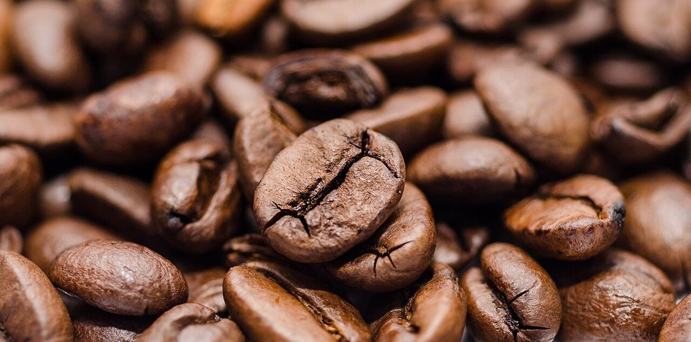

03 / 05
CATALOGUE CAFE
LOGUE CAFEカフェ ・ 香川県高松市
メニューや価格は準備中です。確認できたものから、この一覧に並べていきます。
品書き
メニューの一覧
提供内容・価格は確認できていません。下の欄は、確認できるまで空けてある枠です。
- No.01準備中準備中
- No.02準備中準備中
- No.03準備中準備中
- No.04準備中準備中
- No.05準備中準備中
イメージ(フリー素材)
素材見本のような五つの物
お店のメニューや商品ではありません。粒・粉・塊・層の質感を、イメージとして並べました。
